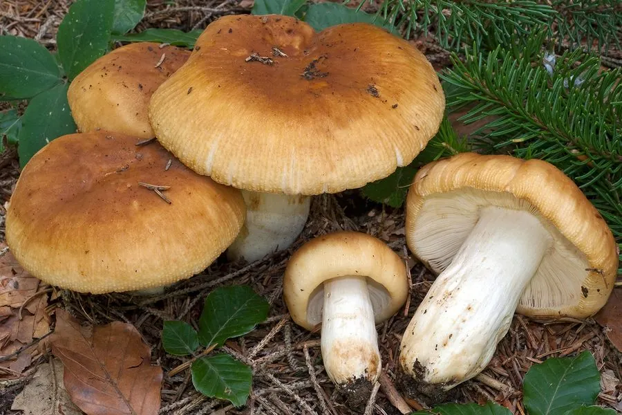

真菌 · 真菌界
臭红菇 Russula foetens

红菇科蘑菇，菌盖黄褐黏滑、气味腥臭，菌肉辛辣，属有毒菌类，误食可致剧烈呕吐腹泻，禁止采食。
- 分类
- 门担子菌门纲伞菌纲目红菇目科红菇科属红菇属
- 栖息环境
- 阔叶林与混交林地上，与栎类共生，夏秋成群发生
- 地理分布
- 北半球温带林地分布，中国南北各地及欧洲、北美常见
- 保护级别
- 暂无评估；种群数量大
物种志
臭红菇的菌盖直径 5–12 厘米，初期半球形，后平展至中央下凹，表面黄褐至土黄色，湿时黏滑，边缘有明显条棱。菌肉白色，脆，气味腥臭刺鼻，味道辛辣。菌褶白色至淡黄，较密，常带锈色斑点，直生。菌柄长 3–8 厘米，直径 1–2.5 厘米，白色至淡黄，中空，表面有细皱纹。孢子印白色至淡黄。
臭红菇生于阔叶林或针阔混交林地上，与栎类等形成外生菌根，夏秋成群发生。它是有毒菌：菌肉含辛辣刺激成分，误食后 30 分钟至数小时出现恶心、呕吐、腹痛、腹泻，严重者脱水。其腥臭气味与辛辣味道是重要警示信号，但部分人误以为“煮熟就没毒”，实际上加热不能完全破坏其刺激性成分。采食红菇时必须闻气味、尝微量菌肉（尝后吐出），凡腥臭辛辣者一律弃去。
形态与习性
- 菌盖直径 5–12 厘米，黄褐色，湿时黏滑
- 菌柄长 3–8 厘米，白色至淡黄，中空
- 孢子印白色至淡黄，孢子具小疣
- 生境阔叶林地上，与栎类共生，夏秋成群
- 毒性有毒，误食致呕吐腹泻，禁止采食
- 辨识气味腥臭、味道辛辣、菌盖湿时黏滑
趣味知识
- 臭红菇的菌肉闻起来腥臭、尝起来辛辣，这是它给采菌人的“警告信号”。
- 误食后 30 分钟至数小时出现剧烈呕吐与腹泻，加热并不能完全去除毒性。
- 它的菌盖湿时黏滑、边缘有明显条棱，与可食的红菇类区别明显。
- 采菌行家会用“闻+舌尖微尝后吐掉”的方式初筛，辛辣腥臭者直接丢弃。